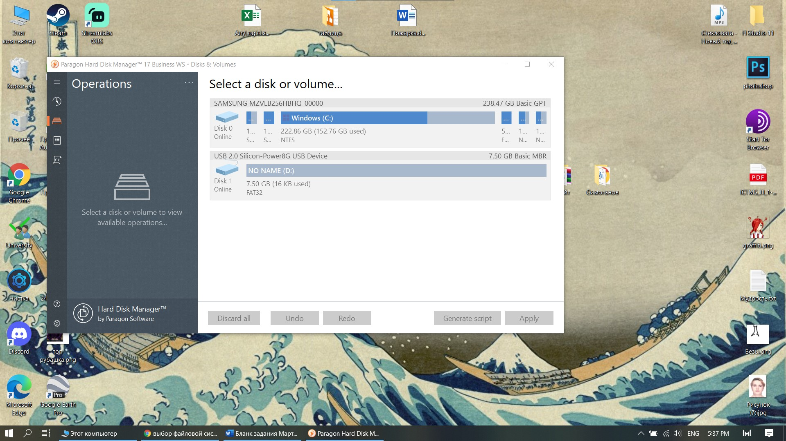
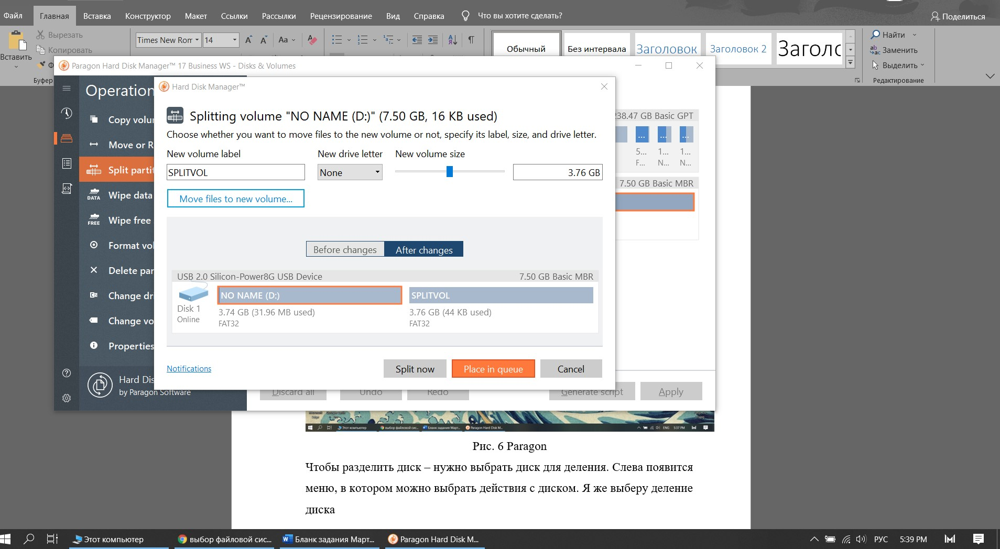

Разделение диска на разделы |
|
Разделение диска на тома нужно для разделения большого объема памяти диска, чтобы было удобно представлять системные и пользовательские файлы.
Если иметь несколько томов, то возможность потери файлов из-за вирусов или нестабильности системы - уменьшается в разы.
Разделение на тома предлагается в самом начале установки операционной системы Windows. Чтобы начать работу с дисками – введем в командную строку “compmgmt.msc”
Ниже показан интерфейс управления дисковым пространством.
|
| |
| Рис. 1 Управление дисками |
| Мы можем увидеть на какие тома разделен нас диск, сколько памяти для них выделено.
На моем устройстве находится 5 томов. 3 выделено для восстановления системы – они нужны для воссоздания отсутствующих и повреждённых томов в многотомном архиве.
1 на котором хранятся все данные – загрузочные данные, файл подкачки, дапмы памяти.
Чтобы разделить диск на тома – нужно выбрать пкм раздел, соответствующий диску, который надо разделить, и выбираем сжатие тома.
|
 |
| Рис. 2 Сжатие тома |
| |
| Рис. 3 Выбор памяти для нового раздела |
| Далее нужно выбрать нераспределенное место диска, нажать пкм и выбрать
создание простого тома. Я выберу имя нового раздела – Z.
Вот что у меня получилось после разделения |
 |
| Рис. 4 Диски в проводнике |
| Таким образом мы можем разделить диск на системный том и том, в котором будут хранится все файлы пользователей.
Далее я рассмотрю, как разделить диск на тома при помощи сторонних программ. Программа, которую я выбрал называется - Paragon Hard Disk Manager.
Работу данной программы я хочу продемонстрировать на примере разделения флешки на 2 тома. Так флешка выглядит до разделения: |
| |
| Рис. 5 Флешка в проводнике |
| Интерфейс программы Paragon выглядит следующим образом: |
|  |
| Рис. 6 Paragon |
| Чтобы разделить диск – нужно выбрать диск для деления. Слева появится меню,
в котором можно выбрать действия с диском. Я же выберу деление диска |
| Интерфейс программы Paragon выглядит следующим образом: |
|  |
| Рис. 7 Paragon split |
| Память, которую я выберу для 2ого тома будет рамен половине всей памяти диска.
Таже можно выбрать название диска. У меня диск будет назван Splitted, что значит разделенный.
После выбора всех настроек для деления – нажимаем кнопку “Разделить ”.
Вот так будет выглядеть разделение в проводнике: |
| |
| Рис. 8 Разделенные тома флешки |
| Вывод: я считаю, что встроенное устройство Windows 10 будет более обосновано чем скачивание платных программ.
Таких как Paragon. Также интерфейс для разделения диска более удобен в панели устройств. |
Как следует размечать диск. |
| Для начала следует сказать о влиянии разделов на работу системы.
Жесткий диск представляет собой пластину, на которой хранится информация, и считывающую головку, которая с бешеной скоростью
носится по поверхности пластины в поисках нужных файлов. Данные записываются последовательно в каждую свободную ячейку,
но что происходит, когда жесткий диск разбит на разделы? |
| И нужно это скорее для удобства. На скоростные показатели диска это никак не влияет. Всё зависит от того, какие данные в
текущий момент времени необходимы системе и в какой последовательности они расположены.
Более практичное решение — разделить накопитель на несколько дисков, на каждый из которых пользователь сможет распределить
память. Например, носитель на 2 Тб можно переразбить на 2 диска:
С — для операционки и программ. Под это дело можно выделить 50 Гб. Оставшееся место — «диск D» — оставить под мультимедиа,
игры, текстовые файлы. Если понадобится переустановить систему, личные данные останутся нетронутыми. |
| Но нужно ли делить диск на разделы – если на диске мало памяти?
Я считаю, что в этом нет смысла. Например, у меня на SSD 256 ГБ памяти. 50 Гб из них относятся к системе – остальные для
других приложений. Но я часто скачиваю дополнения для операционной системы и, следовательно, раздел с операционной системой
будет постепенно увеличиваться в размерах. Следовательно, 50 ГБ мне просто не хватит. Потому я не делил свой диск на разделы. |